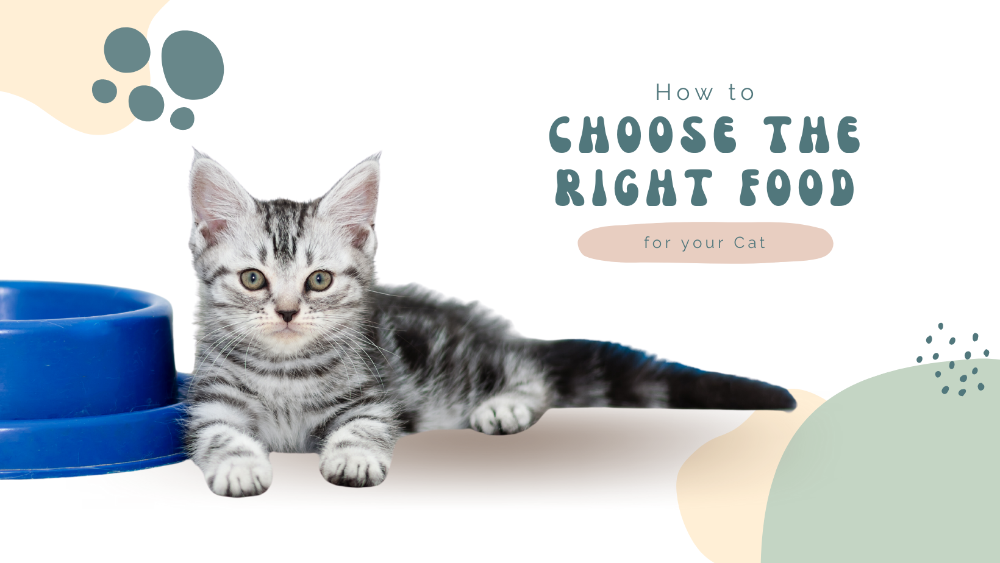

Here are some tips on How to Choose the Right Food for Your Cat:
Cats are obligate carnivores, which means they need to eat meat to survive. Unlike dogs and humans, who are omnivores, cats cannot get the nutrients they need from plants alone. This is why it is so important to choose the right food for your cat. When choosing cat food, there are a few things you need to keep in mind:
- The protein source: The first ingredient in your cat's food should be a meat protein. This is because meat is the best source of protein for cats. Good protein sources for cats include chicken, beef, turkey, lamb, and fish.
- The moisture content: Cats need to eat a diet that is high in moisture. This is because they are not very good at getting water from their food. Canned food is a good choice for cats because it is high in moisture. Dry food can also be a good choice, but you should make sure to provide your cat with plenty of fresh water.
- The nutrient content: Cat food should be nutritionally complete and balanced. This means that it should contain all of the nutrients that your cat needs to stay healthy. You can check the nutrient content of cat food by reading the label.
- The price: Cat food can be expensive, so it is important to find a food that fits your budget. There are many different brands of cat food available, so you should be able to find one that is both affordable and nutritious.
Once you have considered all of these factors, you can start to look for cat food. There are many different brands of cat food available, so you should be able to find one that is right for your cat. Here are a few additional tips for choosing the right food for your cat:
- Talk to your veterinarian: Your veterinarian can help you choose the right food for your cat based on their individual needs.
- Read the label: The label on cat food will tell you about the ingredients, the nutrient content, and the feeding instructions.
- Start with a small bag: If you are not sure which cat food your cat will like, start with a small bag. This way, you will not be stuck with a large bag of food that your cat does not like.
- Make a gradual change: If you are switching your cat to a new food, make a gradual change over a period of a few days. This will help to prevent stomach upset.
- Be patient: It may take some time for your cat to adjust to a new food. Be patient and do not give up.
By following these tips, you can choose the right food for your cat and help them stay healthy and happy.
Back to Blog
 Kitty Korner
Kitty Korner